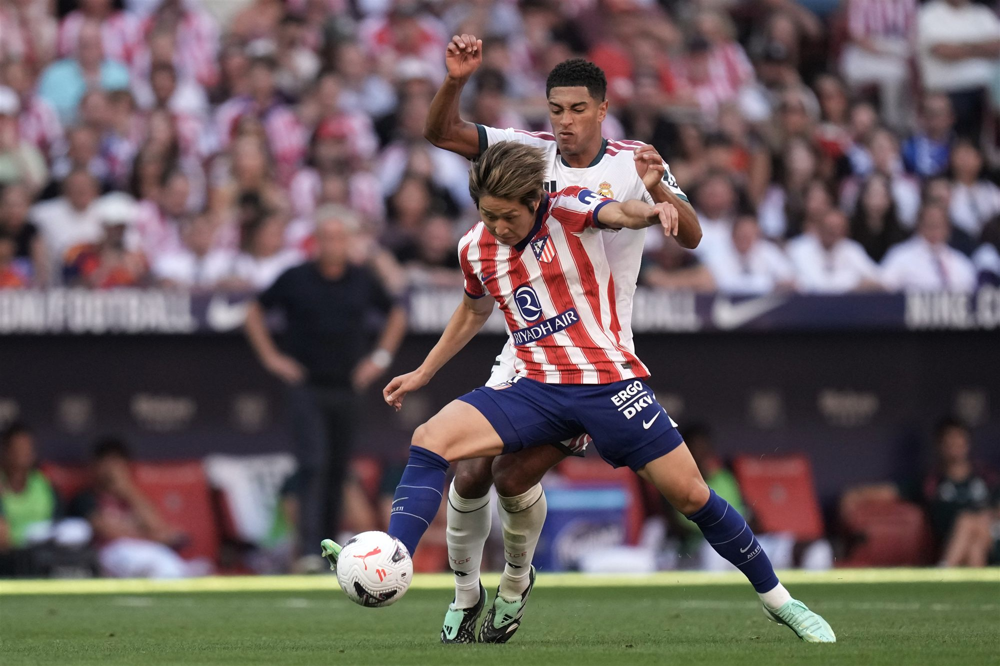
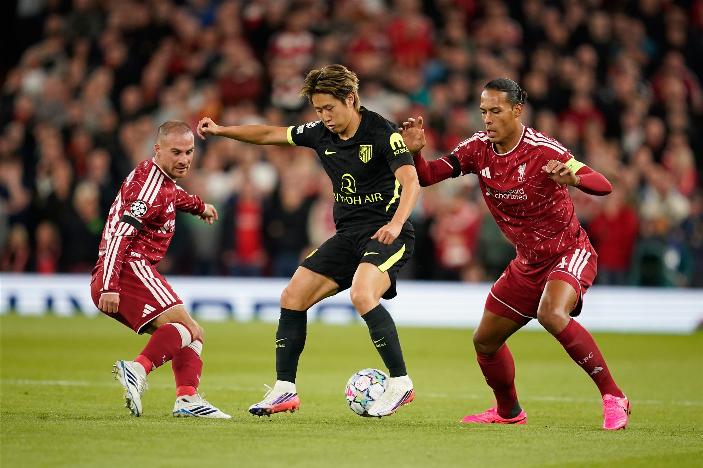
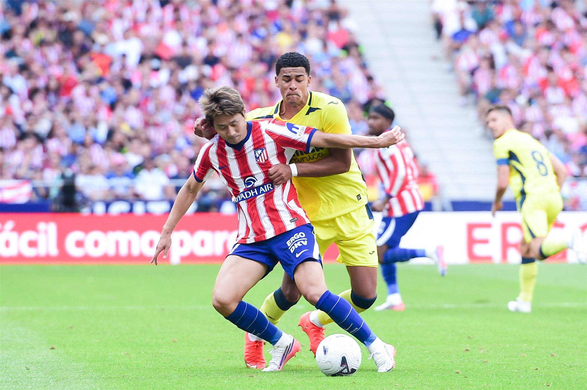
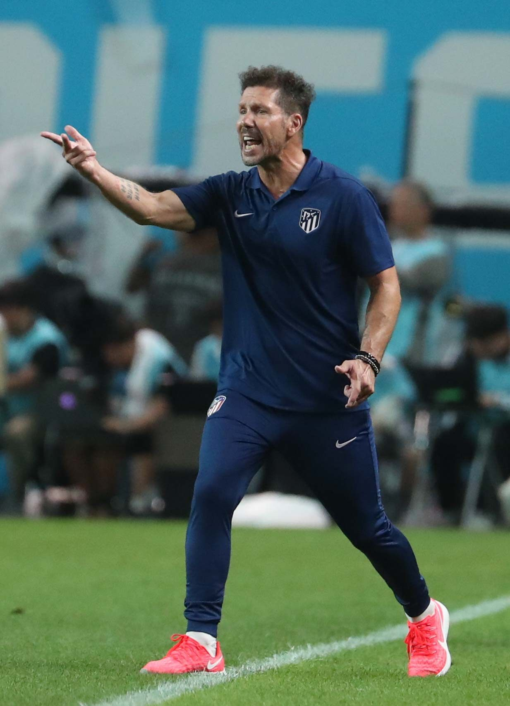
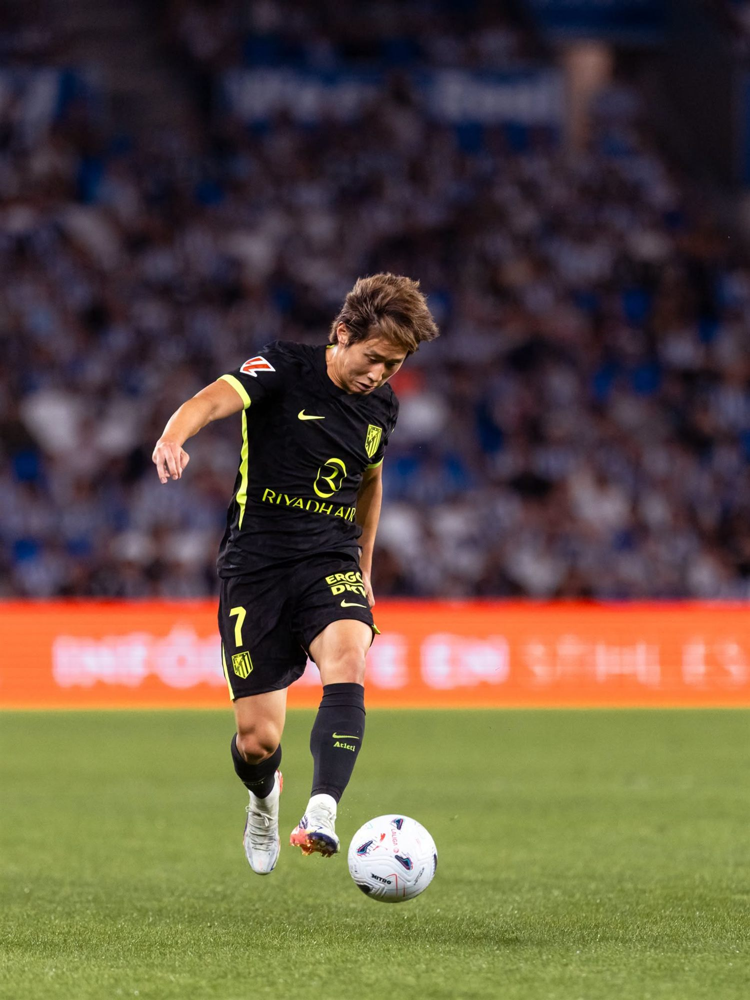
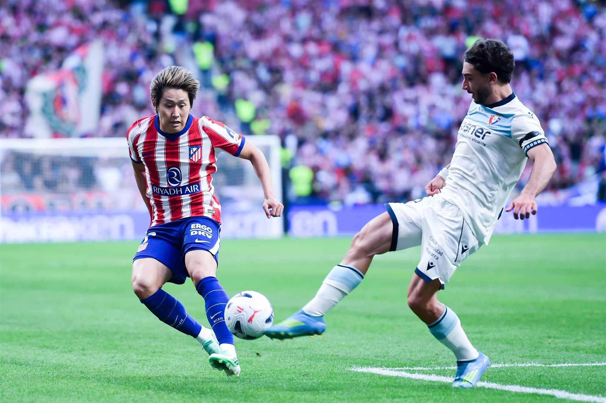
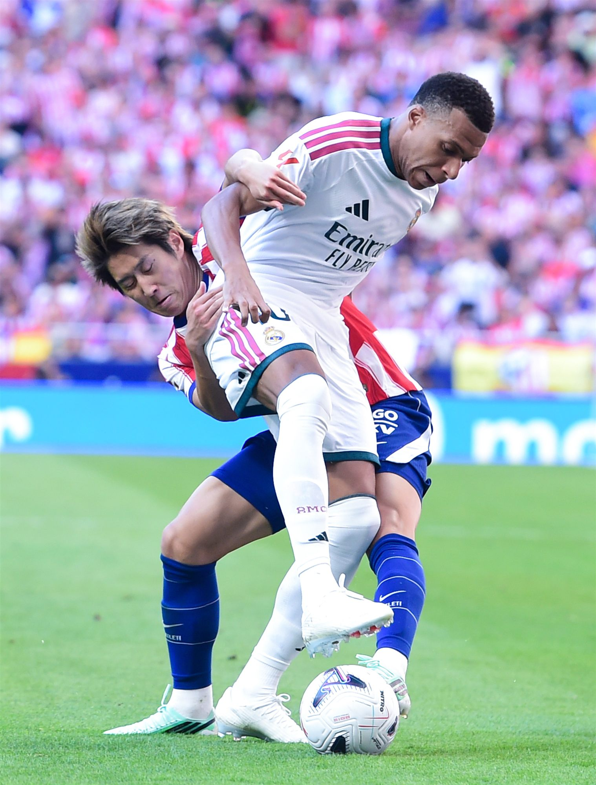
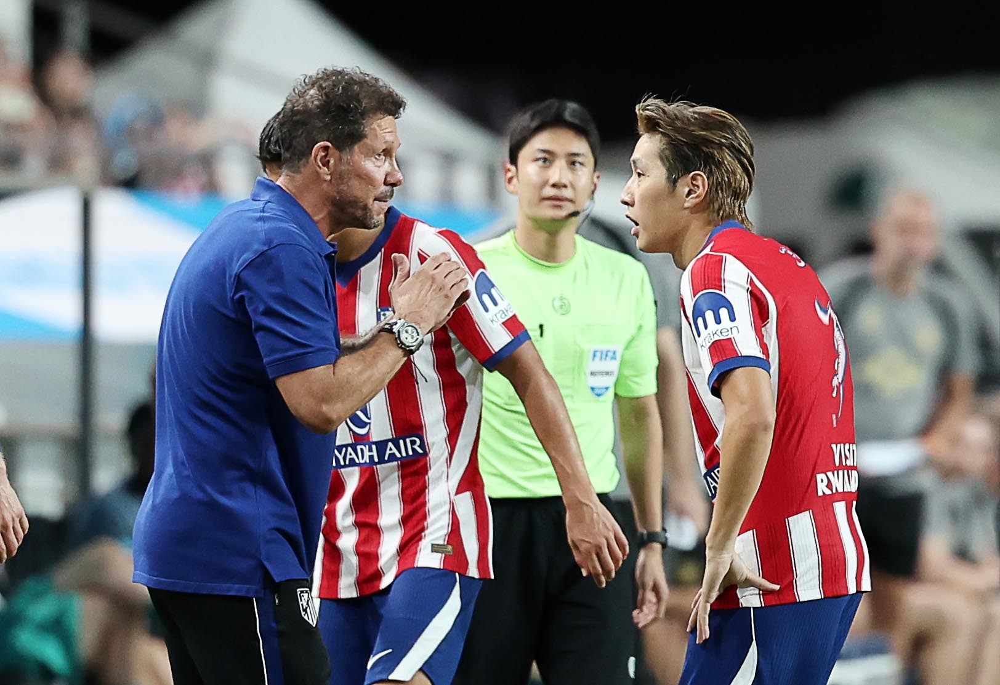
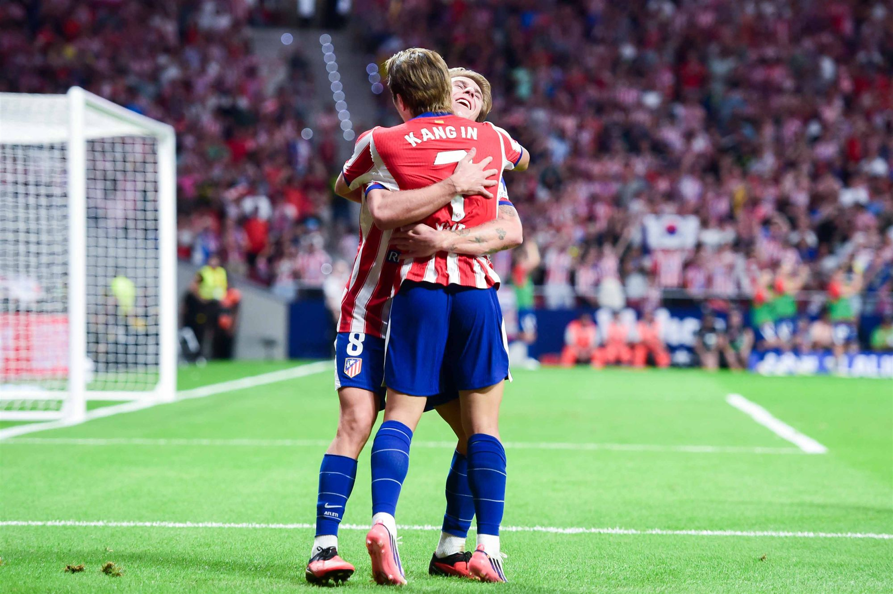
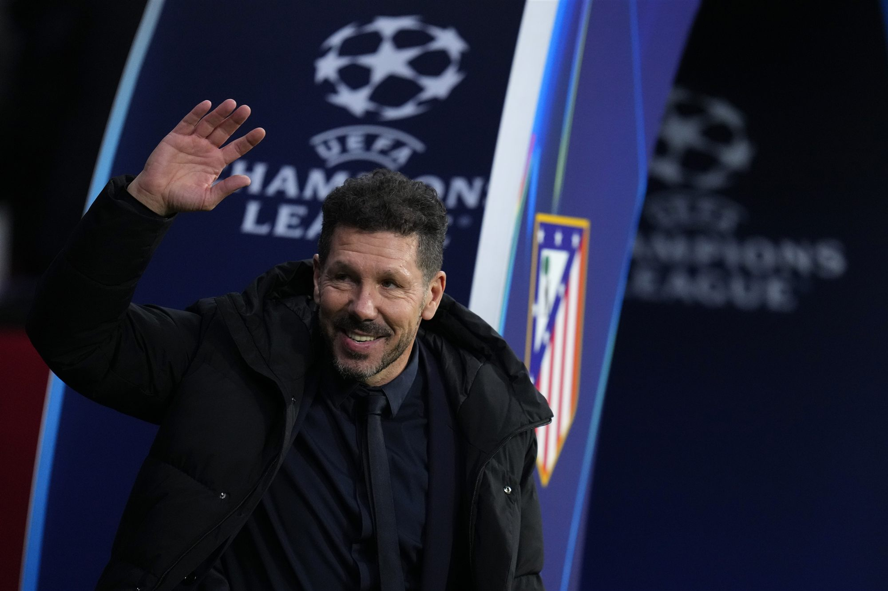

AT, 라리가2강 IN
이강인을 움직이면
누가 살아날까?
이강인을 움직여보세요. ↓
직접 해보기 1 · 이강인 자리이강인을 끌어서 옮겨보세요
여기서는 이강인의 자리만 바꿉니다. 최전방은 아래 ‘직접 해보기 2’에서 바꿉니다.
선수 위치는 최근 경기 보도와 감독 발언을 토대로 그린 전술 그림입니다. 실제 위치 추적 데이터는 아닙니다.
한 명을 움직이면
팀 전체가 움직입니다.
이강인이 자리를 옮기면 옆 선수는 빈 곳을 메우고,
공이 오가는 길도 달라집니다.
8월 30일 세비야전(3-1). 룩맨의 골이 나오기까지 아홉 명이 74초 동안 22번 공을 주고받았습니다.AS ↗
편집# 「120%의 이강인」 8월엔 이강인 한 명이 여는 공격 길을 봤습니다. 이번엔 팀 전체입니다 ↗리버풀전 한 장면을
전술판에 옮겨봤습니다

사진 챔피언스리그 리버풀전의 이강인. 사진 위 점과 선은 이해를 돕기 위한 그래픽입니다. 사진=뉴시스
이강인은 안으로,
9번은 골문 앞으로.
오른쪽 측면이 빕니다.
근거 강 실제 경기에서 확인된 역할로 구성
스페인 AS는 8월 30일 세비야전(3-1) 뒤 이강인·바에나·바리오스·휼만을 '마법의 사각형'이라고 불렀습니다. 이강인은 오른쪽에서 공격을 풀어갔고, 그 바깥으로는 줄리아노가 달렸습니다.AS 평점 ↗

LEE · INSIDE RIGHT사진 상대 압박을 버티며 공을 지키는 이강인. 사진=뉴시스

AT는
이미 새로운 시도를 해봤습니다.
디에고 시메오네 감독(자료사진). 사진=뉴시스
9월 13일 레알 소시에다드 원정.
시메오네는 이강인과 바에나를 빼고
조나선 데이비드를 넣었습니다.
룩맨과 이강인이 함께 뛴 시간이 더 많아서 조나선에게는 선발이 아니라고 말해줬다.디에고 시메오네 감독, 9월 13일 경기 뒤ESPN ↗
조나선은 우리에게 깊이를 준다. 그게 팀에 다른 무언가를 더해준다.같은 날 시메오네 감독. 데이비드는 후반 교체로 들어가 90분에 골을 넣었다. 인용은 ESPN 영문 보도를 우리말로 옮긴 것.ESPN ↗
※ 이날 교체 세 장이 한꺼번에 나왔습니다. 달라진 경기력을 데이비드 한 명의 효과로 보기는 어렵습니다.

사진 원정 유니폼을 입고 공을 다루는 이강인. 사진=뉴시스
레알 소시에다드 0-3 아틀레티코. AS는 교체 뒤 휼만과 카르도주가 뒤를 받치고, 그 앞에 코케, 맨 앞에 '진짜 9번' 데이비드가 선 구조를 짚었습니다.AS ↗

데이비드는 리그 데뷔 뒤
세 경기 연속 골을
넣었습니다.
리그 첫 세 경기에서 모두 골을 넣은 선수는
AT 역사에서 그가 일곱 번째입니다.
소시에다드·오사수나·레알전 연속 득점(아틀레티코 마드리드 공식 발표구단 ↗). 9월 16일 오사수나전(4-0)에선 이강인도 골맛을 봤습니다. 사진은 오사수나전의 이강인. 사진=뉴시스
그럼 훌리안은
벤치에 둬야 할까요?
데이비드와 훌리안은 스타일이 다릅니다.
누가 최전방에 서느냐에 따라 이강인이 뛸 자리도 달라집니다.
직접 해보기 2 · 최전방최전방을 바꿔보세요
이강인은 ‘직접 해보기 1’에서 고른 자리에 있습니다.
한 명이 넘칩니다. 누구를 뺄까요?
※ 선수 실력을 따지자는 게 아니라, 어떤 역할을 내려놓을지 고르는 겁니다. 깜빡이는 선수를 직접 눌러도 됩니다.

같은 선수들이라도
상대가 바뀌면
공략법이 바뀝니다.
9월 20일 메트로폴리타노 더비. AT는 레알을 2-1로 꺾고 2위로 올라섰습니다. 엘파이스는 시메오네가 레알의 왼쪽을 집요하게 노렸다고 분석했습니다.엘파이스 ↗
사진 9월 20일 레알 마드리드전(2-1)의 이강인. 사진=뉴시스
경기를 그대로 재현한 게 아니라 흐름을 풀어 그린 해설입니다. 한 선수의 공으로 돌리지 않고, 상대의 약점과 팀 배치가 함께 만든 장면으로 봤습니다.

처음 질문은 이랬습니다.
이강인은 어디에
있어야 할까?
선수를 한 명씩 넣어보니
질문이 달라집니다.
누구를 살리고,
무엇을 내려놓을까.
경기 중 이강인과 이야기하는 시메오네 감독. 사진=뉴시스
내가 짠 AT

이강인을 움직이면 누가 살아날까?
한 명이 아니었습니다.
위에서 직접 AT를 짜보면, 이 자리에 당신이 내려놓은 것이 남습니다.
2강 IN
레알을 끌어내리고 2위.
선두 바르셀로나와는 승점 5 차이입니다.
메트로폴리타노 홈경기

시메오네의 고민은
이제부터 시작입니다.
순위=9월 20일 7라운드 직후(S13), 일정=라리가 공식 일정(S14). 디에고 시메오네 감독(자료사진). 사진=뉴시스
전술판 선수 얼굴=위키미디어 공용(CC BY-SA), 출처는 '근거·방법론'에 표기